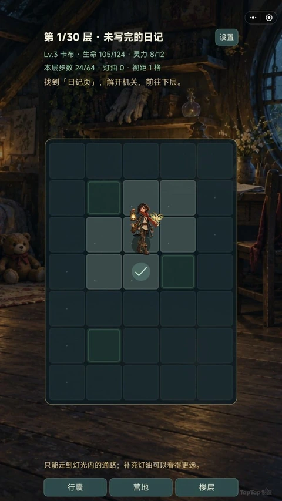

灯火让每一步都有代价
灯火既是氛围包装，也是探索资源。有限行动、补光物品和未知地格形成路线判断，让文字遭遇与空间探索相互支持。
TAPTAP MAKER / 个人 AI 游戏实践
文字冒险 RPG / 灯火探索 / 局外成长
提灯进入 30 层天坑，在有限灯火中判断战斗、用药和绕行。带回永久成长，再用技能、装备和炼药调整下一次出发。

TapTap 公开测试 · 2026.10.25 核对
GAMEPLAY / 核心体验
六名旅人拥有不同特性与独立成长，每人三条技能分支、15 个技能，并可选择终阶。灯火限制行动次数，怪物意图影响战斗决策；探索、支线与收藏解锁角色，技能、装备和九宫格炼药支撑反复尝试。
TAPTAP GALLERY / 游戏展示图
以下来自 2026.10.25 核对的 TapTap 公开游戏页展示图；保留原图，部分含商店宣传文案，不冒充本次重新运行游戏的实机录制。
点击任意截图可查看原图。 多张画面可左右滑动，也可聚焦图库后使用方向键浏览。


DESIGN / 规则与取舍
灯火既是氛围包装，也是探索资源。有限行动、补光物品和未知地格形成路线判断，让文字遭遇与空间探索相互支持。
六人各有三条五节点技能分支，共 90 个节点。弦音通过交替行动积拍，铜芽消耗有限组件等差异机制，提供不同于单纯数值加成的流派选择。
十二件装备、二十件图文收藏和角色技能保留长期进展。终阶选择与免费重配让玩家能调整构筑，再通过新一轮探索检验方案。
技能树采用固定详情区，装备页支持属性比较和强化，长说明可以滚动阅读。针对窄屏与顶部宿主胶囊持续调整字号、安全区和触控范围。
MY PRACTICE / 项目推进
通过 AI 协作整合文字探索、局外成长和多角色构筑，推进六旅人及 90 技能的内容扩展。将角色差异落实为可运行规则，并根据界面反馈迭代技能详情、大图装备、长文字阅读和手机安全区；结合 Android 模拟器检查不同屏幕比例下的主要页面。
TAPTAP / 游戏入口
试玩入口与当前可玩版本以 TapTap 游戏页为准；公开介绍中的功能和数量属于开发者在平台展示的信息。